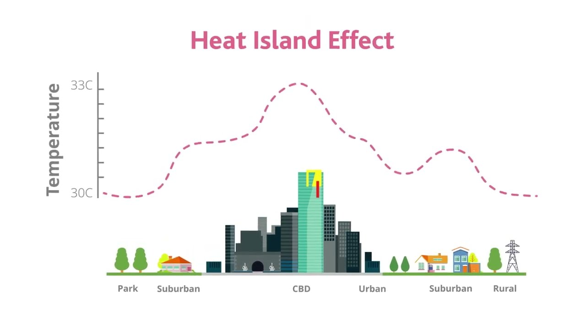
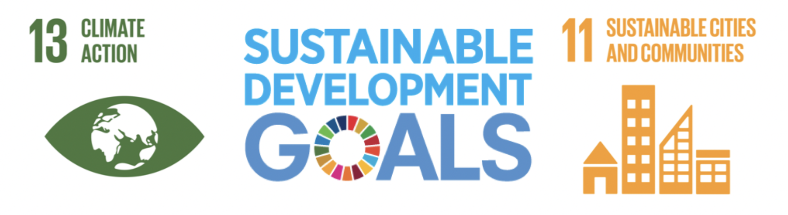
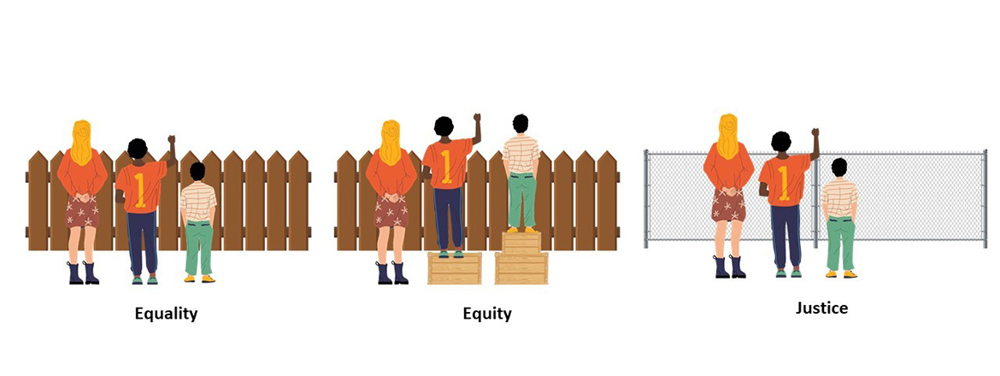
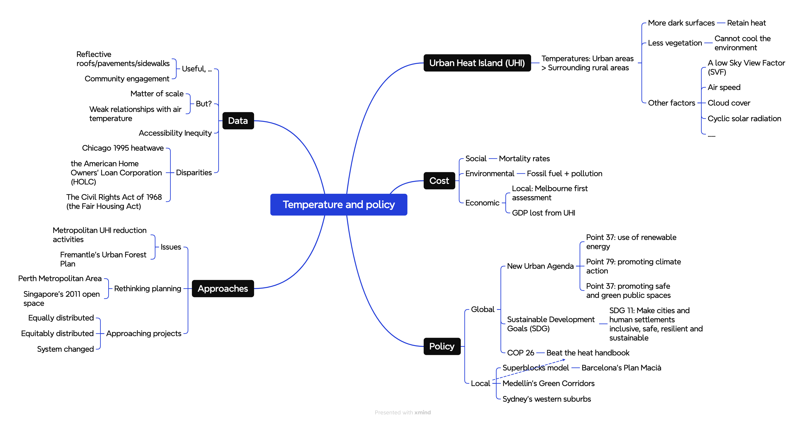
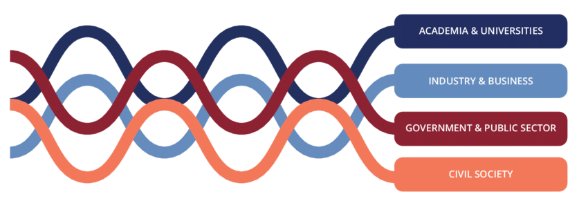

8 Week 8 Temperature
8.1 Summary
This week’s lecture specifically discussed the Urban Heat Island (UHI) effect and the various mitigation policies cities propose. In the fourth week’s case study, I have already gained a preliminary understanding of the UHI effect, where the Temperature in urban areas is higher than in the surrounding rural areas.

The lecture began with a detailed introduction to the causes of UHI (such as dark surfaces, less vegetation, etc.), followed by an explanation of the significant impact and losses caused by UHI in social, environmental, and economic aspects. Consequently, many global and local policies gradually emerged to alleviate the UHI effect and achieve the Sustainable Development Goals (SDGs).

In the latter half of the lecture, the content became more profound. I started to realize the cacophony of the various schemes and policies. Too many seemingly effective methods exist, but are they all suitable for implementation in specific cities? The lecture made me aware of deeper issues in the policy-making domain that should be considered:
Do these policies provide enough detail?
Given the different cities and terrains, are the methods reproducible?
Could regulations constrain the implementation of the schemes?
Should we focus more on Equity, Equality, or Justice?

This week’s practical focused on using code to explore urban temperatures based on two different data types, Landsat and MODIS. Although MODIS data can create time series, it loses spatial elements. (The nature of advantages and disadvantages was emphasized again. In this course, we have seen many different sensors and data types, each with advantages, disadvantages, and application scenarios.)

The image below is a mind map I created for this week’s topics, which facilitates revision.
8.2 Applications
There are various schemes to mitigate the Urban Heat Island (UHI) effect. In this section, I aim to highlight the use of remote sensing technology to explore the comparative effectiveness of these different schemes and policies. Saneinejad, Moonen, and Carmeliet (2014) utilized the Universal Thermal Climate Index (UTCI) for simulations to examine the effects of evaporative cooling, shading, and changing surface albedo on mitigating the UHI effect, discovering that increasing surface reflectivity results in less comfort improvement than shading does. Wang, Berardi, and Akbari (2016) employed remote sensing technology to collect data and evaluate various UHI mitigation strategies in Toronto. It was found that the duration of direct sunlight and the mean radiant Temperature, which are significantly influenced by urban form, play crucial roles.
Parsaee et al. (2019) criticized urban climate maps (UCMs) and UHI mitigation strategies as being often limited in their application to urban development actions, as many strategies fail to engage stakeholders adequately. Consequently, the establishment of a collaborative UCM platform is recommended.
Despite the popularity of increasing surface reflectivity (cool coatings) as a mitigation measure, this week’s readings offered a critique of this approach.
8.3 Reflection
This week’s task offered a choice between SAR and Temperature topics. I opted for Temperature as this theme effectively linked much of the knowledge I’ve been interested in this term. In this chapter, I’ve learned how remote sensing technology can assist us in mitigating the UHI effect and formulating policies. Indeed, the lecture continuously emphasized the complexity and contentious nature of policy-making.
The CASA0008 Smart Cities course introduced a term known as the Quadruple Helix (comprising Government, Academy, Industry, and Community). Beyond the considerations outlined in the summary, the effectiveness of a policy’s implementation crucially hinges on successful engagement with the Quadruple Helix. Policy-makers must consider the losses and benefits to each sector within the Quadruple Helix, striving to achieve a balanced, win-win situation.
